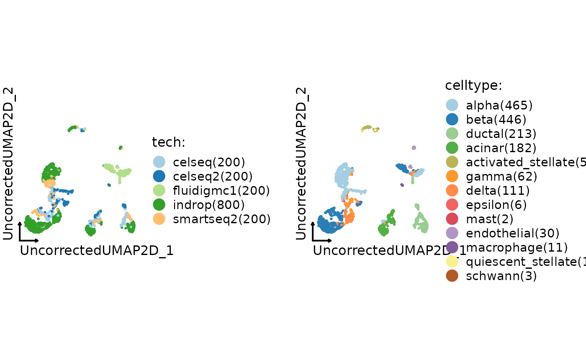
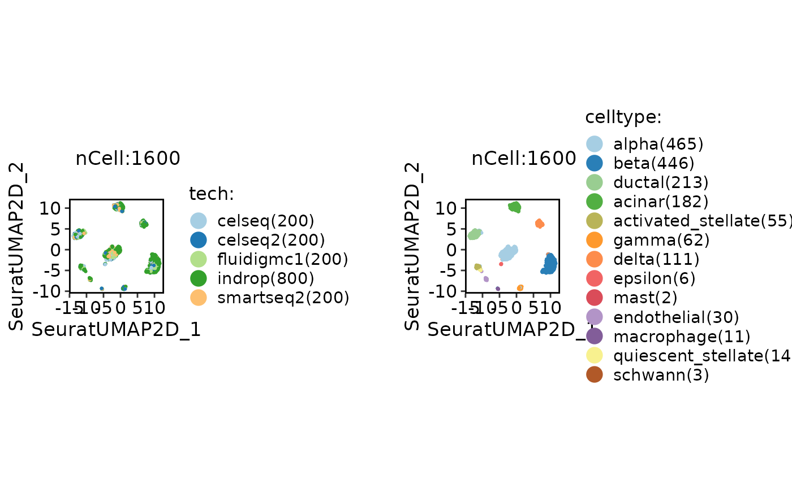
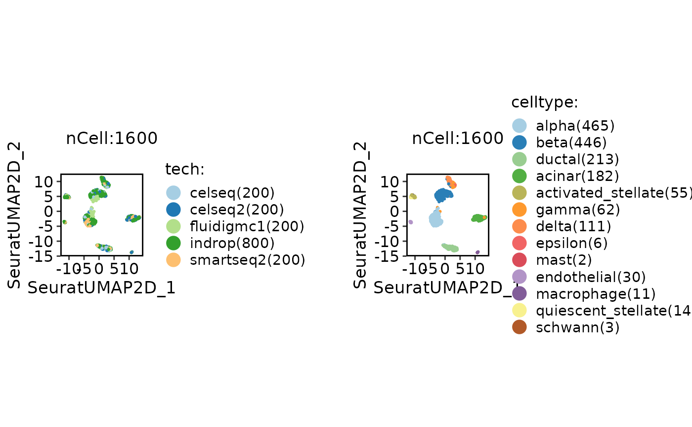
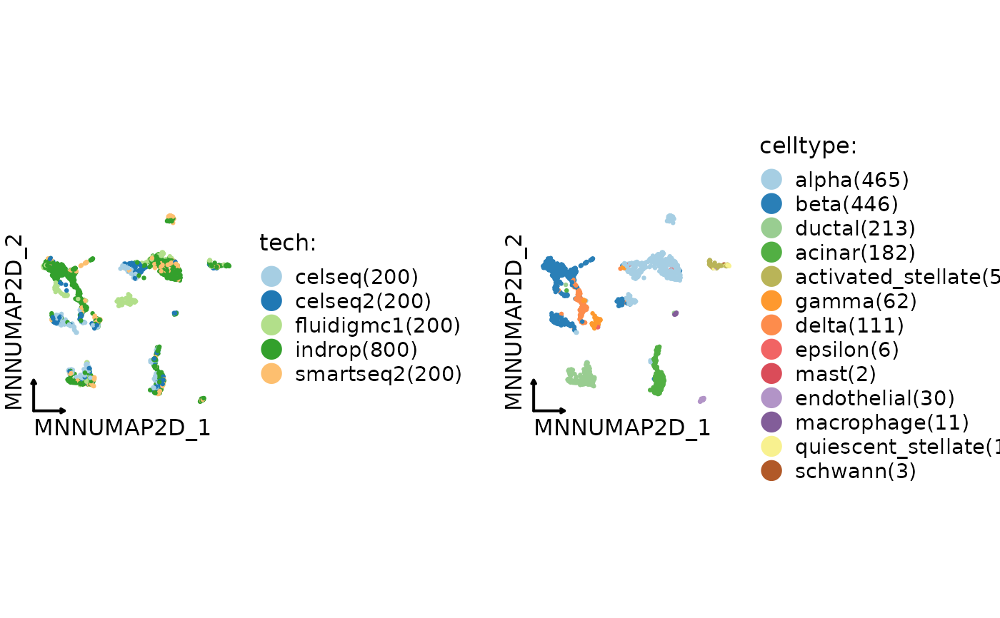
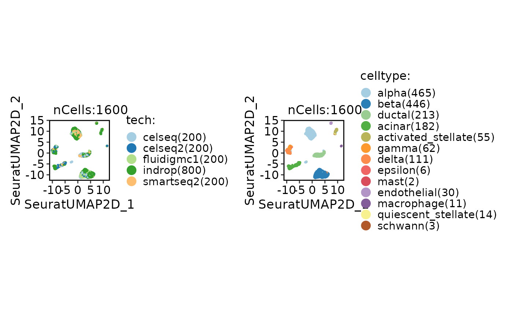

Integrate single-cell RNA-seq data using various integration methods.
Usage
Integration_SCP(
srtMerge = NULL,
batch,
append = TRUE,
srtList = NULL,
assay = NULL,
integration_method = "Uncorrected",
do_normalization = NULL,
normalization_method = "LogNormalize",
do_HVF_finding = TRUE,
HVF_source = "separate",
HVF_method = "vst",
nHVF = 2000,
HVF_min_intersection = 1,
HVF = NULL,
do_scaling = TRUE,
vars_to_regress = NULL,
regression_model = "linear",
scale_within_batch = FALSE,
linear_reduction = "pca",
linear_reduction_dims = 50,
linear_reduction_dims_use = NULL,
linear_reduction_params = list(),
force_linear_reduction = FALSE,
nonlinear_reduction = "umap",
nonlinear_reduction_dims = c(2, 3),
nonlinear_reduction_params = list(),
force_nonlinear_reduction = TRUE,
neighbor_metric = "euclidean",
neighbor_k = 20L,
cluster_algorithm = "louvain",
cluster_resolution = 0.6,
seed = 11,
...
)Arguments
- srtMerge
A merged Seurat object that includes the batch information.
- batch
A character string specifying the batch variable name.
- append
Logical, if TRUE, the integrated data will be appended to the original Seurat object (srtMerge).
- srtList
A list of Seurat objects to be checked and preprocessed.
- assay
The name of the assay to be used for downstream analysis.
- integration_method
A character string specifying the integration method to use. Supported methods are:
"Uncorrected","Seurat","scVI","MNN","fastMNN","Harmony","Scanorama","BBKNN","CSS","LIGER","Conos","ComBat". Default is"Uncorrected".- do_normalization
A logical value indicating whether data normalization should be performed.
- normalization_method
The normalization method to be used. Possible values are "LogNormalize", "SCT", and "TFIDF". Default is "LogNormalize".
- do_HVF_finding
A logical value indicating whether highly variable feature (HVF) finding should be performed. Default is TRUE.
- HVF_source
The source of highly variable features. Possible values are "global" and "separate". Default is "separate".
- HVF_method
The method for selecting highly variable features. Default is "vst".
- nHVF
The number of highly variable features to select. Default is 2000.
- HVF_min_intersection
The feature needs to be present in batches for a minimum number of times in order to be considered as highly variable. The default value is 1.
- HVF
A vector of highly variable features. Default is NULL.
- do_scaling
A logical value indicating whether to perform scaling. If TRUE, the function will force to scale the data using the ScaleData function.
- vars_to_regress
A vector of variable names to include as additional regression variables. Default is NULL.
- regression_model
The regression model to use for scaling. Options are "linear", "poisson", or "negativebinomial" (default is "linear").
- scale_within_batch
Whether to scale data within each batch. Only valid when the
integration_methodis one of"Uncorrected","Seurat","MNN","Harmony","BBKNN","CSS","ComBat".- linear_reduction
The linear dimensionality reduction method to use. Options are "pca", "svd", "ica", "nmf", "mds", or "glmpca" (default is "pca").
- linear_reduction_dims
The number of dimensions to keep after linear dimensionality reduction (default is 50).
- linear_reduction_dims_use
The dimensions to use for downstream analysis. If NULL, all dimensions will be used.
- linear_reduction_params
A list of parameters to pass to the linear dimensionality reduction method.
- force_linear_reduction
A logical value indicating whether to force linear dimensionality reduction even if the specified reduction is already present in the Seurat object.
- nonlinear_reduction
The nonlinear dimensionality reduction method to use. Options are "umap","umap-naive", "tsne", "dm", "phate", "pacmap", "trimap", "largevis", or "fr" (default is "umap").
- nonlinear_reduction_dims
The number of dimensions to keep after nonlinear dimensionality reduction. If a vector is provided, different numbers of dimensions can be specified for each method (default is c(2, 3)).
- nonlinear_reduction_params
A list of parameters to pass to the nonlinear dimensionality reduction method.
- force_nonlinear_reduction
A logical value indicating whether to force nonlinear dimensionality reduction even if the specified reduction is already present in the Seurat object.
- neighbor_metric
The distance metric to use for finding neighbors. Options are "euclidean", "cosine", "manhattan", or "hamming" (default is "euclidean").
- neighbor_k
The number of nearest neighbors to use for finding neighbors (default is 20).
- cluster_algorithm
The clustering algorithm to use. Options are "louvain", "slm", or "leiden" (default is "louvain").
- cluster_resolution
The resolution parameter to use for clustering. Larger values result in fewer clusters (default is 0.6).
- seed
An integer specifying the random seed for reproducibility. Default is 11.
- ...
Additional arguments to be passed to the integration method function.
Examples
data("panc8_sub")
panc8_sub <- Integration_SCP(
srtMerge = panc8_sub, batch = "tech",
integration_method = "Uncorrected"
)
#> [2023-11-21 07:22:20.499585] Start Uncorrected_integrate
#> [2023-11-21 07:22:20.504665] Spliting srtMerge into srtList by column tech... ...
#> [2023-11-21 07:22:20.75097] Checking srtList... ...
#> Data 1/5 of the srtList is raw_normalized_counts. Perform NormalizeData(LogNormalize) on the data ...
#> Perform FindVariableFeatures on the data 1/5 of the srtList...
#> Data 2/5 of the srtList is raw_normalized_counts. Perform NormalizeData(LogNormalize) on the data ...
#> Perform FindVariableFeatures on the data 2/5 of the srtList...
#> Data 3/5 of the srtList is raw_normalized_counts. Perform NormalizeData(LogNormalize) on the data ...
#> Perform FindVariableFeatures on the data 3/5 of the srtList...
#> Data 4/5 of the srtList is raw_counts. Perform NormalizeData(LogNormalize) on the data ...
#> Perform FindVariableFeatures on the data 4/5 of the srtList...
#> Data 5/5 of the srtList is raw_counts. Perform NormalizeData(LogNormalize) on the data ...
#> Perform FindVariableFeatures on the data 5/5 of the srtList...
#> Use the separate HVF from srtList...
#> Number of available HVF: 2000
#> [2023-11-21 07:22:22.999887] Finished checking.
#> [2023-11-21 07:22:23.744863] Perform integration(Uncorrected) on the data...
#> [2023-11-21 07:22:23.745] Perform ScaleData on the data...
#> [2023-11-21 07:22:23.917545] Perform linear dimension reduction (pca) on the data...
#> Warning: The following arguments are not used: force.recalc
#> Warning: The following arguments are not used: force.recalc
#> [2023-11-21 07:22:24.772714] Perform FindClusters (louvain) on the data...
#> [2023-11-21 07:22:24.865321] Reorder clusters...
#> [2023-11-21 07:22:24.942215] Perform nonlinear dimension reduction (umap) on the data...
#> Non-linear dimensionality reduction(umap) using Reduction(Uncorrectedpca, dims:1-10) as input
#> Found more than one class "dist" in cache; using the first, from namespace 'BiocGenerics'
#> Also defined by ‘spam’
#> Found more than one class "dist" in cache; using the first, from namespace 'BiocGenerics'
#> Also defined by ‘spam’
#> Non-linear dimensionality reduction(umap) using Reduction(Uncorrectedpca, dims:1-10) as input
#> Found more than one class "dist" in cache; using the first, from namespace 'BiocGenerics'
#> Also defined by ‘spam’
#> Found more than one class "dist" in cache; using the first, from namespace 'BiocGenerics'
#> Also defined by ‘spam’
#> [2023-11-21 07:22:33.153057] Uncorrected_integrate done
#> Elapsed time: 12.65 secs
CellDimPlot(panc8_sub, group.by = c("tech", "celltype"))

panc8_sub <- Integration_SCP(
srtMerge = panc8_sub, batch = "tech",
integration_method = "Uncorrected",
HVF_min_intersection = 5
)
#> [2023-11-21 07:22:33.601557] Start Uncorrected_integrate
#> [2023-11-21 07:22:33.606674] Spliting srtMerge into srtList by column tech... ...
#> [2023-11-21 07:22:33.982132] Checking srtList... ...
#> Data 1/5 of the srtList has been log-normalized.
#> Perform FindVariableFeatures on the data 1/5 of the srtList...
#> Data 2/5 of the srtList has been log-normalized.
#> Perform FindVariableFeatures on the data 2/5 of the srtList...
#> Data 3/5 of the srtList has been log-normalized.
#> Perform FindVariableFeatures on the data 3/5 of the srtList...
#> Data 4/5 of the srtList has been log-normalized.
#> Perform FindVariableFeatures on the data 4/5 of the srtList...
#> Data 5/5 of the srtList has been log-normalized.
#> Perform FindVariableFeatures on the data 5/5 of the srtList...
#> Use the separate HVF from srtList...
#> Number of available HVF: 264
#> [2023-11-21 07:22:35.497287] Finished checking.
#> [2023-11-21 07:22:36.376903] Perform integration(Uncorrected) on the data...
#> [2023-11-21 07:22:36.377034] Perform ScaleData on the data...
#> [2023-11-21 07:22:36.431986] Perform linear dimension reduction (pca) on the data...
#> Warning: The following arguments are not used: force.recalc
#> Warning: The following arguments are not used: force.recalc
#> [2023-11-21 07:22:37.085666] Perform FindClusters (louvain) on the data...
#> [2023-11-21 07:22:37.201152] Reorder clusters...
#> [2023-11-21 07:22:37.262771] Perform nonlinear dimension reduction (umap) on the data...
#> Non-linear dimensionality reduction(umap) using Reduction(Uncorrectedpca, dims:1-11) as input
#> Found more than one class "dist" in cache; using the first, from namespace 'BiocGenerics'
#> Also defined by ‘spam’
#> Found more than one class "dist" in cache; using the first, from namespace 'BiocGenerics'
#> Also defined by ‘spam’
#> Non-linear dimensionality reduction(umap) using Reduction(Uncorrectedpca, dims:1-11) as input
#> Found more than one class "dist" in cache; using the first, from namespace 'BiocGenerics'
#> Also defined by ‘spam’
#> Found more than one class "dist" in cache; using the first, from namespace 'BiocGenerics'
#> Also defined by ‘spam’
#> [2023-11-21 07:22:44.938949] Uncorrected_integrate done
#> Elapsed time: 11.34 secs
CellDimPlot(panc8_sub, group.by = c("tech", "celltype"))

panc8_sub <- Integration_SCP(
srtMerge = panc8_sub, batch = "tech",
integration_method = "Uncorrected",
HVF_min_intersection = 5, scale_within_batch = TRUE
)
#> [2023-11-21 07:22:45.433616] Start Uncorrected_integrate
#> [2023-11-21 07:22:45.438893] Spliting srtMerge into srtList by column tech... ...
#> [2023-11-21 07:22:45.794249] Checking srtList... ...
#> Data 1/5 of the srtList has been log-normalized.
#> Perform FindVariableFeatures on the data 1/5 of the srtList...
#> Data 2/5 of the srtList has been log-normalized.
#> Perform FindVariableFeatures on the data 2/5 of the srtList...
#> Data 3/5 of the srtList has been log-normalized.
#> Perform FindVariableFeatures on the data 3/5 of the srtList...
#> Data 4/5 of the srtList has been log-normalized.
#> Perform FindVariableFeatures on the data 4/5 of the srtList...
#> Data 5/5 of the srtList has been log-normalized.
#> Perform FindVariableFeatures on the data 5/5 of the srtList...
#> Use the separate HVF from srtList...
#> Number of available HVF: 264
#> [2023-11-21 07:22:47.383402] Finished checking.
#> [2023-11-21 07:22:48.120754] Perform integration(Uncorrected) on the data...
#> [2023-11-21 07:22:48.120892] Perform ScaleData on the data...
#> [2023-11-21 07:22:48.178095] Perform linear dimension reduction (pca) on the data...
#> Warning: The following arguments are not used: force.recalc
#> Warning: The following arguments are not used: force.recalc
#> [2023-11-21 07:22:48.901565] Perform FindClusters (louvain) on the data...
#> [2023-11-21 07:22:49.048645] Reorder clusters...
#> [2023-11-21 07:22:49.108998] Perform nonlinear dimension reduction (umap) on the data...
#> Non-linear dimensionality reduction(umap) using Reduction(Uncorrectedpca, dims:1-12) as input
#> Found more than one class "dist" in cache; using the first, from namespace 'BiocGenerics'
#> Also defined by ‘spam’
#> Found more than one class "dist" in cache; using the first, from namespace 'BiocGenerics'
#> Also defined by ‘spam’
#> Non-linear dimensionality reduction(umap) using Reduction(Uncorrectedpca, dims:1-12) as input
#> Found more than one class "dist" in cache; using the first, from namespace 'BiocGenerics'
#> Also defined by ‘spam’
#> Found more than one class "dist" in cache; using the first, from namespace 'BiocGenerics'
#> Also defined by ‘spam’
#> [2023-11-21 07:22:57.015141] Uncorrected_integrate done
#> Elapsed time: 11.58 secs
CellDimPlot(panc8_sub, group.by = c("tech", "celltype"))

panc8_sub <- Integration_SCP(
srtMerge = panc8_sub, batch = "tech",
integration_method = "Seurat"
)
#> [2023-11-21 07:22:57.506948] Start Seurat_integrate
#> [2023-11-21 07:22:57.513201] Spliting srtMerge into srtList by column tech... ...
#> [2023-11-21 07:22:57.868443] Checking srtList... ...
#> Data 1/5 of the srtList has been log-normalized.
#> Perform FindVariableFeatures on the data 1/5 of the srtList...
#> Data 2/5 of the srtList has been log-normalized.
#> Perform FindVariableFeatures on the data 2/5 of the srtList...
#> Data 3/5 of the srtList has been log-normalized.
#> Perform FindVariableFeatures on the data 3/5 of the srtList...
#> Data 4/5 of the srtList has been log-normalized.
#> Perform FindVariableFeatures on the data 4/5 of the srtList...
#> Data 5/5 of the srtList has been log-normalized.
#> Perform FindVariableFeatures on the data 5/5 of the srtList...
#> Use the separate HVF from srtList...
#> Number of available HVF: 2000
#> [2023-11-21 07:22:59.443209] Finished checking.
#> [2023-11-21 07:23:00.186965] Perform FindIntegrationAnchors on the data...
#> [2023-11-21 07:23:19.293753] Perform integration(Seurat) on the data...
#> [2023-11-21 07:23:26.460136] Perform ScaleData on the data...
#> [2023-11-21 07:23:26.556868] Perform linear dimension reduction (pca) on the data...
#> Warning: The following arguments are not used: force.recalc
#> Warning: The following arguments are not used: force.recalc
#> [2023-11-21 07:23:27.440833] Perform FindClusters (louvain) on the data...
#> [2023-11-21 07:23:27.569122] Reorder clusters...
#> [2023-11-21 07:23:27.639545] Perform nonlinear dimension reduction (umap) on the data...
#> Non-linear dimensionality reduction(umap) using Reduction(Seuratpca, dims:1-12) as input
#> Found more than one class "dist" in cache; using the first, from namespace 'BiocGenerics'
#> Also defined by ‘spam’
#> Found more than one class "dist" in cache; using the first, from namespace 'BiocGenerics'
#> Also defined by ‘spam’
#> Non-linear dimensionality reduction(umap) using Reduction(Seuratpca, dims:1-12) as input
#> Found more than one class "dist" in cache; using the first, from namespace 'BiocGenerics'
#> Also defined by ‘spam’
#> Found more than one class "dist" in cache; using the first, from namespace 'BiocGenerics'
#> Also defined by ‘spam’
#> [2023-11-21 07:23:35.54961] Seurat_integrate done
#> Elapsed time: 38.04 secs
CellDimPlot(panc8_sub, group.by = c("tech", "celltype"))

panc8_sub <- Integration_SCP(
srtMerge = panc8_sub, batch = "tech",
integration_method = "Seurat",
FindIntegrationAnchors_params = list(reduction = "rpca")
)
#> [2023-11-21 07:23:36.032687] Start Seurat_integrate
#> [2023-11-21 07:23:36.038165] Spliting srtMerge into srtList by column tech... ...
#> [2023-11-21 07:23:36.661033] Checking srtList... ...
#> Data 1/5 of the srtList has been log-normalized.
#> Perform FindVariableFeatures on the data 1/5 of the srtList...
#> Data 2/5 of the srtList has been log-normalized.
#> Perform FindVariableFeatures on the data 2/5 of the srtList...
#> Data 3/5 of the srtList has been log-normalized.
#> Perform FindVariableFeatures on the data 3/5 of the srtList...
#> Data 4/5 of the srtList has been log-normalized.
#> Perform FindVariableFeatures on the data 4/5 of the srtList...
#> Data 5/5 of the srtList has been log-normalized.
#> Perform FindVariableFeatures on the data 5/5 of the srtList...
#> Use the separate HVF from srtList...
#> Number of available HVF: 2000
#> [2023-11-21 07:23:38.28451] Finished checking.
#> [2023-11-21 07:23:39.311497] Use 'rpca' integration workflow...
#> [2023-11-21 07:23:39.311634] Perform ScaleData on the data 1 ...
#> [2023-11-21 07:23:39.362197] Perform linear dimension reduction (pca) on the data 1 ...
#> [2023-11-21 07:23:39.516416] Perform ScaleData on the data 2 ...
#> [2023-11-21 07:23:39.577217] Perform linear dimension reduction (pca) on the data 2 ...
#> [2023-11-21 07:23:39.717211] Perform ScaleData on the data 3 ...
#> [2023-11-21 07:23:39.780633] Perform linear dimension reduction (pca) on the data 3 ...
#> [2023-11-21 07:23:39.914314] Perform ScaleData on the data 4 ...
#> [2023-11-21 07:23:39.992768] Perform linear dimension reduction (pca) on the data 4 ...
#> [2023-11-21 07:23:40.255761] Perform ScaleData on the data 5 ...
#> [2023-11-21 07:23:40.308695] Perform linear dimension reduction (pca) on the data 5 ...
#> [2023-11-21 07:23:40.478852] Perform FindIntegrationAnchors on the data...
#> [2023-11-21 07:23:49.166569] Perform integration(Seurat) on the data...
#> [2023-11-21 07:23:56.003096] Perform ScaleData on the data...
#> [2023-11-21 07:23:56.098095] Perform linear dimension reduction (pca) on the data...
#> Warning: The following arguments are not used: force.recalc
#> Warning: The following arguments are not used: force.recalc
#> [2023-11-21 07:23:56.921441] Perform FindClusters (louvain) on the data...
#> [2023-11-21 07:23:57.045694] Reorder clusters...
#> [2023-11-21 07:23:57.119271] Perform nonlinear dimension reduction (umap) on the data...
#> Non-linear dimensionality reduction(umap) using Reduction(Seuratpca, dims:1-11) as input
#> Found more than one class "dist" in cache; using the first, from namespace 'BiocGenerics'
#> Also defined by ‘spam’
#> Found more than one class "dist" in cache; using the first, from namespace 'BiocGenerics'
#> Also defined by ‘spam’
#> Non-linear dimensionality reduction(umap) using Reduction(Seuratpca, dims:1-11) as input
#> Found more than one class "dist" in cache; using the first, from namespace 'BiocGenerics'
#> Also defined by ‘spam’
#> Found more than one class "dist" in cache; using the first, from namespace 'BiocGenerics'
#> Also defined by ‘spam’
#> [2023-11-21 07:24:05.337769] Seurat_integrate done
#> Elapsed time: 29.31 secs
CellDimPlot(panc8_sub, group.by = c("tech", "celltype"))

if (FALSE) {
integration_methods <- c(
"Uncorrected", "Seurat", "scVI", "MNN", "fastMNN", "Harmony",
"Scanorama", "BBKNN", "CSS", "LIGER", "Conos", "ComBat"
)
for (method in integration_methods) {
panc8_sub <- Integration_SCP(
srtMerge = panc8_sub, batch = "tech",
integration_method = method,
linear_reduction_dims_use = 1:50,
nonlinear_reduction = "umap"
)
print(CellDimPlot(panc8_sub,
group.by = c("tech", "celltype"),
reduction = paste0(method, "UMAP2D"),
xlab = "", ylab = "", title = method,
legend.position = "none", theme_use = "theme_blank"
))
}
nonlinear_reductions <- c("umap", "tsne", "dm", "phate", "pacmap", "trimap", "largevis", "fr")
panc8_sub <- Integration_SCP(
srtMerge = panc8_sub, batch = "tech",
integration_method = "Seurat",
linear_reduction_dims_use = 1:50,
nonlinear_reduction = nonlinear_reductions
)
for (nr in nonlinear_reductions) {
print(CellDimPlot(panc8_sub,
group.by = c("tech", "celltype"),
reduction = paste0("Seurat", nr, "2D"),
xlab = "", ylab = "", title = nr,
legend.position = "none", theme_use = "theme_blank"
))
}
}